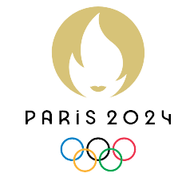

Igrzyska Olimpijskie w Tokio
Igrzyska Olimpijskie w Tokio dostarczyły nam ogromnych emocji, godnych tak elitarnego wydarzenia. Poprzednie Igrzyska były szczególnie wyczekiwane ze względu na to, że przerwa trwała nie 4 a 5 lat przez wybuch pandemii. Przez taki obrót spraw kibice i miłośnicy każdych dyscyplin sportu na świecie na XXXIII Igrzyska Olimpijskie w Paryżu poczekają o rok krócej i potrwają od 26 lipca 2024 do 11 sierpnia 2024 co na pewno nas wszystkich cieszy. Francuska stolica będzie gościła olimpijczyków już 3 raz w historii, poprzednio miało to miejsce w latach 1900 i 1924. Mottem przyszłych Igrzysk Olimpijskich będzie Tworzone dla dzielenia się.Zegarek
Aktualny czas:Czas na stronie:
